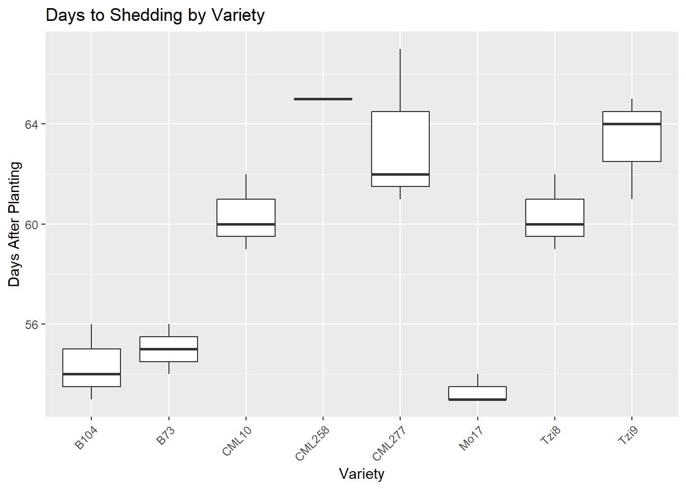
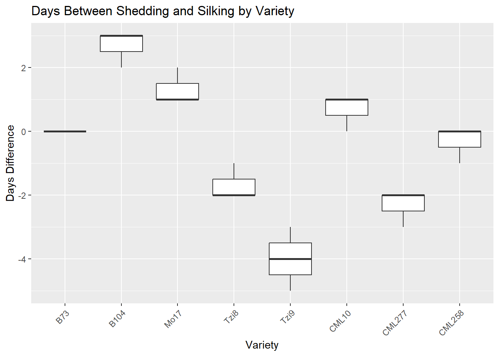
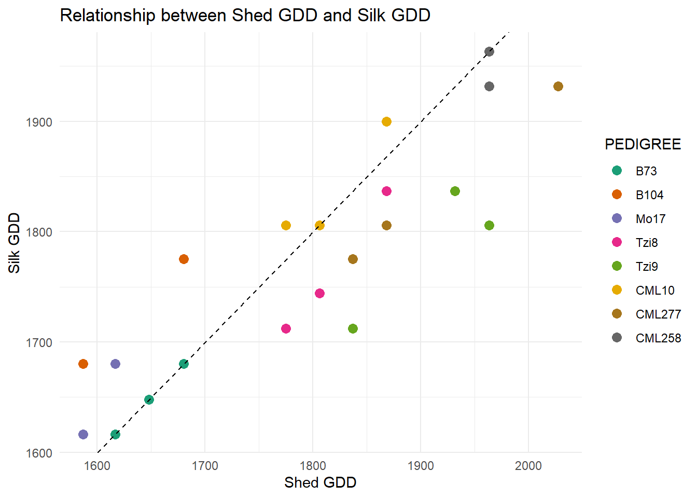
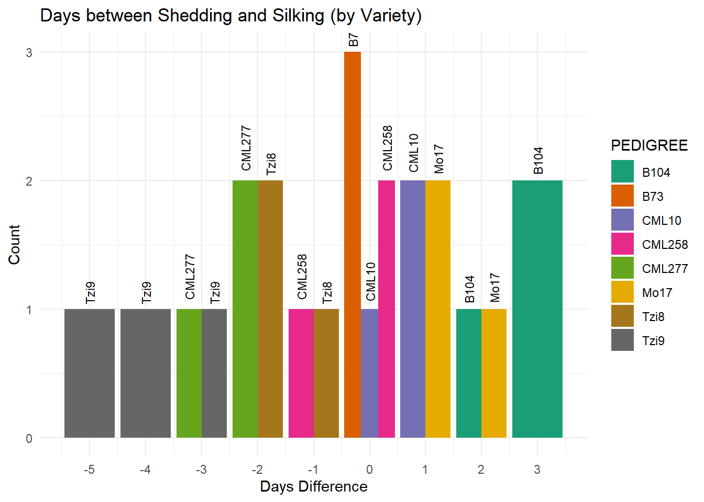
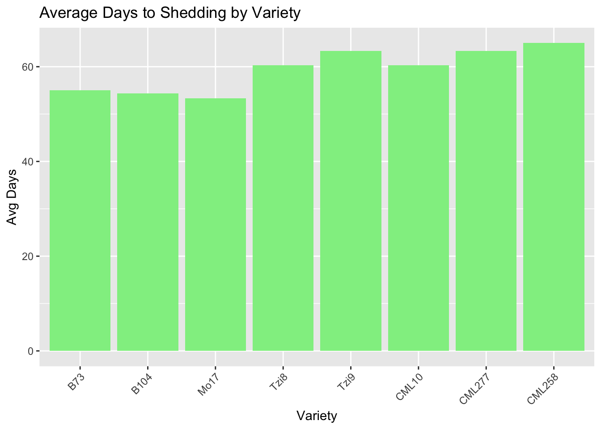
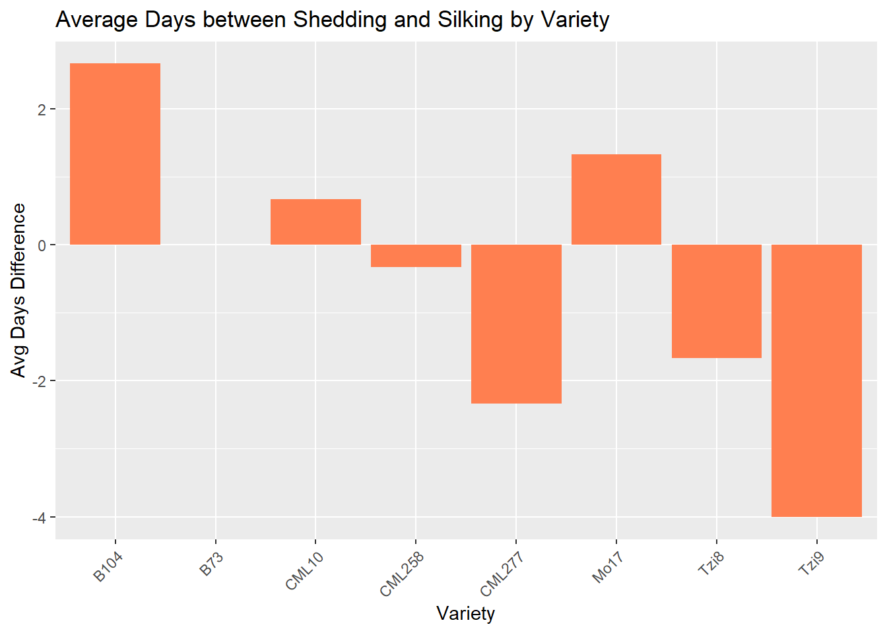
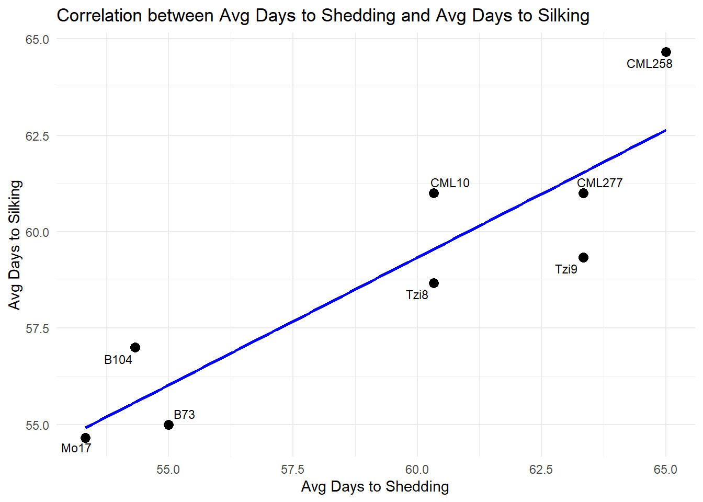

This needs to run to load the R script so we can include the code chunks below. Note that you can pull in more than one R script if you want.
Welcome to Project 3 for Dr. Marguerite Butler’s ZOOL710 Class at UH Manoa.
My name is Jerry and I work on Maize Genetics.
In our lab the project we are working on focuses on trying to make temperate corn insensitive todaylength so that it can flower under the longer days in temperate lattitudes and breeders can access and incroporate desireble traits from the the highlydiverse tropical maize genome into temperate maize through cross pollination.
Here in this project we’ll explore the shedding and silking days of different maize lines grown in the Waimanalo research station.
TALK ABOUT THE VARIETES AND WHATS UNIQUE ABOUT EACH
First you’re going to want to download the file to your correct folder, then navigate to the correct location where the file is.
Lets load the data first
Lets set up the data location, then read and save the data under a preferred name
library(here)
here() starts at C:/Users/jerry/Documents/Git/Project-3
library(dplyr)
Attaching package: 'dplyr'
The following objects are masked from 'package:stats':
filter, lag
The following objects are masked from 'package:base':
intersect, setdiff, setequal, union
PEDIGREE SHD Days_SHD GDD_SHD
Length:24 Length:24 Min. :53.00 Min. :1587
Class :character Class :character 1st Qu.:54.75 1st Qu.:1640
Mode :character Mode :character Median :60.00 Median :1806
Mean :59.38 Mean :1786
3rd Qu.:62.50 3rd Qu.:1884
Max. :67.00 Max. :2028
SK Days_SK GDD_SK
Length:24 Min. :54.00 Min. :1616
Class :character 1st Qu.:56.00 1st Qu.:1680
Mode :character Median :59.00 Median :1775
Mean :58.92 Mean :1772
3rd Qu.:61.00 3rd Qu.:1837
Max. :65.00 Max. :1964
skimr::skim(HI_Data)
Data summary
Name
HI_Data
Number of rows
24
Number of columns
7
_______________________
Column type frequency:
character
3
numeric
4
________________________
Group variables
None
Variable type: character
skim_variable
n_missing
complete_rate
min
max
empty
n_unique
whitespace
PEDIGREE
0
1
3
7
0
9
0
SHD
0
1
5
6
0
11
0
SK
0
1
5
6
0
11
0
Variable type: numeric
skim_variable
n_missing
complete_rate
mean
sd
p0
p25
p50
p75
p100
hist
Days_SHD
0
1
59.38
4.59
53.0
54.75
60
62.50
67.0
▇▂▇▅▆
GDD_SHD
0
1
1786.40
144.29
1587.0
1640.12
1806
1884.38
2027.5
▇▂▇▅▆
Days_SK
0
1
58.92
3.53
54.0
56.00
59
61.00
65.0
▇▃▆▂▅
GDD_SK
0
1
1771.85
111.08
1616.5
1680.00
1775
1837.00
1963.5
▇▃▆▂▅
What we have:
Pedigree: Genotype / variety SHD: Shedding date (Pollen starts) SK: Silking Date (Female flowers have silks and are ready for reproduction) Days_SHD: Days after planting to shedding Days_SK: Dats after planting to silking GDD_SHD: Growing degree days to shedding GDD_SK: Growing degree days to silking
Okay, we have some good information, but we should add two columns that calculate 1. the difference in Days after planting (DAP) between silking and shedding (DAP_SK - DAP_SHD) 2. the difference in Growing degree days (GDD) between silking and shedding (GDD_SK - GDD_SHD)
This will be good to add because the time between shedding and silking (especially thermal time) is extremely important in corn development and flowering time.
Now lets add the columns
library(dplyr)HI_Data <- HI_Data %>%mutate(Days_diff = Days_SK - Days_SHD, # How many days between shedding and silkingGDD_diff = GDD_SK - GDD_SHD # How many growing degree days between shedding and silking )# View the new columnsdplyr::glimpse(HI_Data)
Now lets do some Summary Statistics to see what’s going on with each variety.
We’ll look at how early or late each pedigree is and how synchronized shedding and silking are on average.
# We'll look at how early or late each pedigree is and # how synchronized shedding and silking are on average.library(dplyr)HI_Data %>%group_by(PEDIGREE) %>%summarise(mean_Days_SHD =mean(Days_SHD, na.rm =TRUE),mean_Days_SK =mean(Days_SK, na.rm =TRUE),mean_Days_diff =mean(Days_diff, na.rm =TRUE),mean_GDD_diff =mean(GDD_diff, na.rm =TRUE) )
Oops, two CML277 rows showed up, but we just want one. lets remove that extra space then look at the summary table again.
# Oops, two CML277 rows showed up, but we just want one.# lets remove that extra space then look at the summary table again.install.packages("stringr")
Warning: package 'stringr' is in use and will not be installed
# Create the summarized tableHI_Summary <- HI_Data %>%group_by(PEDIGREE) %>%summarise(mean_Days_SHD =mean(Days_SHD, na.rm =TRUE),mean_Days_SK =mean(Days_SK, na.rm =TRUE),mean_Days_diff =mean(Days_diff, na.rm =TRUE),mean_GDD_diff =mean(GDD_diff, na.rm =TRUE) ) %>%rename(`Avg days to shedding`= mean_Days_SHD,`Avg days to silking`= mean_Days_SK,`Avg days between shedding and silking`= mean_Days_diff,`Avg difference of GDD between shedding and silking`= mean_GDD_diff )# Lets also clean the original data set so its easier to read when we make graphs from it.library(dplyr)HI_Data <- HI_Data %>%rename(`Shed Date`= SHD,`Days to Shedding`= Days_SHD,`Shed GDD`= GDD_SHD,`Silk Date`= SK,`Days to Silking`= Days_SK,`Silk GDD`= GDD_SK,`Days between Shedding and Silking`= Days_diff,`Difference in GDD between Shedding and Silking`= GDD_diff )
Now these data tables look much nicer.
Lets add some code to make the tables look really nice when we view it in the website html.
library(gt)HI_Data %>%gt()
PEDIGREE
Shed Date
Days to Shedding
Shed GDD
Silk Date
Days to Silking
Silk GDD
Days between Shedding and Silking
Difference in GDD between Shedding and Silking
B104
25-Jul
56
1680.0
28-Jul
59
1775.0
3
95.0
B104
22-Jul
53
1587.0
25-Jul
56
1680.0
3
93.0
B104
23-Jul
54
1616.5
25-Jul
56
1680.0
2
63.5
B73
25-Jul
56
1680.0
25-Jul
56
1680.0
0
0.0
B73
23-Jul
54
1616.5
23-Jul
54
1616.5
0
0.0
B73
24-Jul
55
1648.0
24-Jul
55
1648.0
0
0.0
Mo17
23-Jul
54
1616.5
25-Jul
56
1680.0
2
63.5
Mo17
22-Jul
53
1587.0
23-Jul
54
1616.5
1
29.5
Mo17
22-Jul
53
1587.0
23-Jul
54
1616.5
1
29.5
CML277
30-Jul
61
1837.0
28-Jul
59
1775.0
-2
-62.0
CML277
31-Jul
62
1868.5
29-Jul
60
1806.0
-2
-62.5
CML277
5-Aug
67
2027.5
2-Aug
64
1932.0
-3
-95.5
CML10
31-Jul
62
1868.5
1-Aug
63
1900.0
1
31.5
CML10
28-Jul
59
1775.0
29-Jul
60
1806.0
1
31.0
CML10
29-Jul
60
1806.0
29-Jul
60
1806.0
0
0.0
Tzi9
3-Aug
65
1963.5
29-Jul
60
1806.0
-5
-157.5
Tzi9
2-Aug
64
1932.0
30-Jul
61
1837.0
-3
-95.0
Tzi9
30-Jul
61
1837.0
26-Jul
57
1712.0
-4
-125.0
CML258
3-Aug
65
1963.5
3-Aug
65
1963.5
0
0.0
CML258
3-Aug
65
1963.5
3-Aug
65
1963.5
0
0.0
CML258
3-Aug
65
1963.5
2-Aug
64
1932.0
-1
-31.5
Tzi8
29-Jul
60
1806.0
27-Jul
58
1744.0
-2
-62.0
Tzi8
31-Jul
62
1868.5
30-Jul
61
1837.0
-1
-31.5
Tzi8
28-Jul
59
1775.0
26-Jul
57
1712.0
-2
-63.0
HI_Summary %>%gt()
PEDIGREE
Avg days to shedding
Avg days to silking
Avg days between shedding and silking
Avg difference of GDD between shedding and silking
B104
54.33333
57.00000
2.6666667
83.83333
B73
55.00000
55.00000
0.0000000
0.00000
CML10
60.33333
61.00000
0.6666667
20.83333
CML258
65.00000
64.66667
-0.3333333
-10.50000
CML277
63.33333
61.00000
-2.3333333
-73.33333
Mo17
53.33333
54.66667
1.3333333
40.83333
Tzi8
60.33333
58.66667
-1.6666667
-52.16667
Tzi9
63.33333
59.33333
-4.0000000
-125.83333
Okay so what are we looking at here? We basically have averages of the values for each pedigree from the original data. We want to look at how early they are flowering, but also synchronization between shedding and silking because if they are not synchronized, thus can create problems in the field.
We can see that Mo17 has the earliest shed and silk date, while CML258 has the latest shed and silk date. It’s important to note that B73 is a positive control and has perfectly synchronized flowering time. Some varietes have negative values for Avg days between shedding and silking meaning that the silks were ready before the pollen was shedding. This is bad because ideally the pollen shedding and silk emergence should overlap, with pollen emergence slightly before or at the same time as the silks. If the silks come out too early, they are more sensitive and could get old and dry out quickly before pollen is available meaning bad fertilization and kernel set.
Now that we have some idea of what we are looking at and it cleaner, lets make some graphs
Now time to make some graphs and do some statistical analysis!
Lets make some graphs for the Original Data
now lets make some graphs based on the original data to look at some relationships
Graph time!
Original Data
Boxplot 1 - Days to Shedding by Variety
This boxplot will plot Days to shedding by variety. It will show which varieites shed pollen earlier or later and variation within each.
library(ggplot2)ggplot(HI_Data, aes(x = PEDIGREE, y =`Days to Shedding`)) +geom_boxplot() +labs(title ="Days to Shedding by Variety", x ="Variety", y ="Days After Planting") +theme(axis.text.x =element_text(angle =45, hjust =1))

We can see that CML277, CML 258, and Tzi9 shed pretty late while B104, B73, and Mo17 shed pretty early.
Boxplot 2 - Days between shedding and silking
This boxplot will plot Days between shedding and silking. It will show how synchornized flowering is within varieties.
ggplot(HI_Data, aes(x = PEDIGREE, y =`Days between Shedding and Silking`)) +geom_boxplot() +labs(title ="Days Between Shedding and Silking by Variety", x ="Variety", y ="Days Difference") +theme(axis.text.x =element_text(angle =45, hjust =1))

We can see that the most synchronized (besides the B73 control) are CML10, CML258, and Mo17.
Scatterplot 1 - Shed GDD vs Silk GDD
This scatterplot will plot Shed GDD vs Silk GDD
Plants on the 1:1 line are perfectly synchronized; points below = silking earlier and points above = silking later
library(ggplot2)ggplot(HI_Data, aes(x =`Shed GDD`, y =`Silk GDD`, color = PEDIGREE)) +geom_point(size =3) +geom_abline(intercept =0, slope =1, linetype ="dashed") +labs(title ="Relationship between Shed GDD and Silk GDD", x ="Shed GDD", y ="Silk GDD") +scale_color_brewer(palette ="Dark2") +theme_minimal()

Barplot 1 - Days between shedding and silking
This barplot will plot days between shedding and silking. It will show overall how much delay or mismatch exsts across all plants.
library(dplyr)count_data <- HI_Data %>%group_by(PEDIGREE, `Days between Shedding and Silking`) %>%summarise(count =n(), .groups ="drop")ggplot(count_data, aes(x =`Days between Shedding and Silking`, y = count, fill = PEDIGREE, label = PEDIGREE)) +geom_bar(stat ="identity", position ="dodge") +geom_text(aes(label = PEDIGREE), position =position_dodge(width =0.9), angle =90, # <-- rotate verticalvjust =0.5, hjust =-0.2, size =3) +labs(title ="Days between Shedding and Silking (by Variety)", x ="Days Difference", y ="Count") +scale_fill_brewer(palette ="Dark2") +scale_x_continuous(breaks =seq(from =min(count_data$`Days between Shedding and Silking`),to =max(count_data$`Days between Shedding and Silking`),by =1)) +theme_minimal()

We can see that Tzi9 did pretyy bad and the silks came out way before (4-5 days) before the pollen shed. This is bad for successfull ferlitization We can also see that B104 had a pretty large difference between shed and silk date being 3 days apart
Anova 1 - Shedding and Silking days between varieties
Now lets do an ANOVA for Days between shedding and silking between varieties to confirm any correlation or between varieties
anova_days_diff <-aov(`Days between Shedding and Silking`~ PEDIGREE, data = HI_Data)summary(anova_days_diff)
Df Sum Sq Mean Sq F value Pr(>F)
PEDIGREE 7 95.96 13.708 36.56 1.12e-08 ***
Residuals 16 6.00 0.375
---
Signif. codes: 0 '***' 0.001 '**' 0.01 '*' 0.05 '.' 0.1 ' ' 1
We can see the P value is 0.00000000112 meaning that there is a highly significant difference among varieties (Pedigree) in their days between shedding and silking.
Some varieties are much more synchronized than others and it’s a real biological difference.
Summarized Data
Now lets do some graphs for the Summarized Data
Barplot 2 - Average days to shedding by variety
This barplot will plot the average days to shedding by variety
ggplot(HI_Summary, aes(x = PEDIGREE, y =`Avg days to shedding`)) +geom_bar(stat ="identity", fill ="lightgreen") +labs(title ="Average Days to Shedding by Variety", x ="Variety", y ="Avg Days") +theme(axis.text.x =element_text(angle =45, hjust =1))

We can see that Tzi9 and CML258 had the latest shedding, while Mo17 had the earliest shedding
Barplot 3 - Average days between shedding and silking
This barplot will plot the average days between shedding and silking We’ll be able to easily spot which varieties have better synchrony (closer to 0)
ggplot(HI_Summary, aes(x = PEDIGREE, y =`Avg days between shedding and silking`)) +geom_bar(stat ="identity", fill ="coral") +labs(title ="Average Days between Shedding and Silking by Variety", x ="Variety", y ="Avg Days Difference") +theme(axis.text.x =element_text(angle =45, hjust =1))

We can see that CML10 and CML258 have really good synchrony, while TZi9 and B104 have really bad synchrony
Correlation 1 - Avg days to shedding and silking
This will show the average days ti shedding vs the average days to silking This tests of varities that shed earlier also silk earlier - correlation acorss averages.
If the point is right on the line then shedding and silking happens at the same time Points above the line mean silking happens after shedding. Points below the line mean that silking happens earlier then shedding.
install.packages("ggrepel")
Warning: package 'ggrepel' is in use and will not be installed
library(ggrepel)ggplot(HI_Summary, aes(x =`Avg days to shedding`, y =`Avg days to silking`, label = PEDIGREE)) +geom_point(size =3) +geom_text_repel(size =3) +# <-- smart labelinggeom_smooth(method ="lm", se =FALSE, color ="blue") +labs(title ="Correlation between Avg Days to Shedding and Avg Days to Silking", x ="Avg Days to Shedding", y ="Avg Days to Silking") +theme_minimal()
`geom_smooth()` using formula = 'y ~ x'
Warning: The following aesthetics were dropped during statistical transformation: label.
ℹ This can happen when ggplot fails to infer the correct grouping structure in
the data.
ℹ Did you forget to specify a `group` aesthetic or to convert a numerical
variable into a factor?

We can see that Mo17 is the most synchornized, while CML258 is the least synchronized.
Correlation 2 - Avg days ti shedding and avg days to silking
This is a correlation between Avg Days to Shedding and Avg Days to Silking
cor.test(HI_Summary$`Avg days to shedding`, HI_Summary$`Avg days to silking`)
Pearson's product-moment correlation
data: HI_Summary$`Avg days to shedding` and HI_Summary$`Avg days to silking`
t = 5.0093, df = 6, p-value = 0.00243
alternative hypothesis: true correlation is not equal to 0
95 percent confidence interval:
0.5277928 0.9816172
sample estimates:
cor
0.8983502
##### CONCLUSION ####
We can see the correlation value was r = 0.898 This means that when the average days to shedding increases, the average days to silking also increases. This shows there is a strong posisitve correlation between shedding and silk and varieties that shed later also tend to silk later.